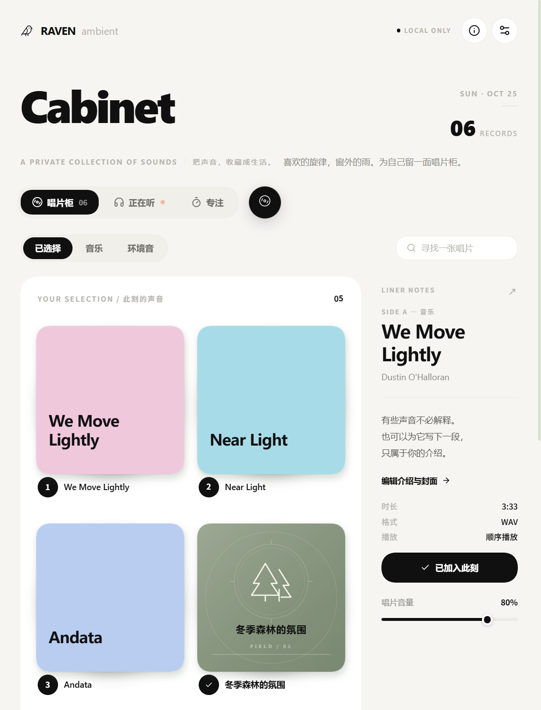
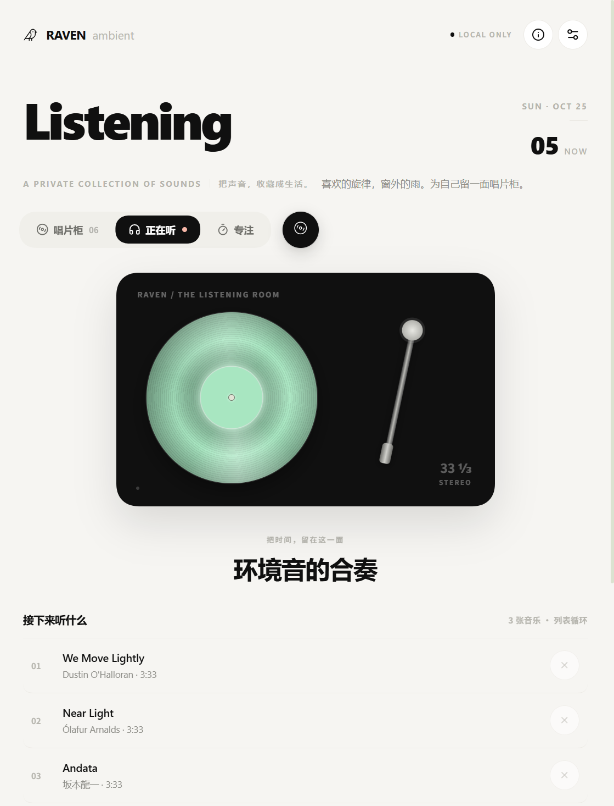
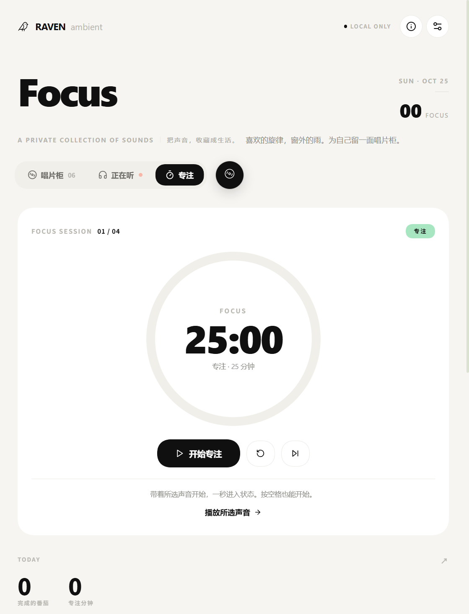
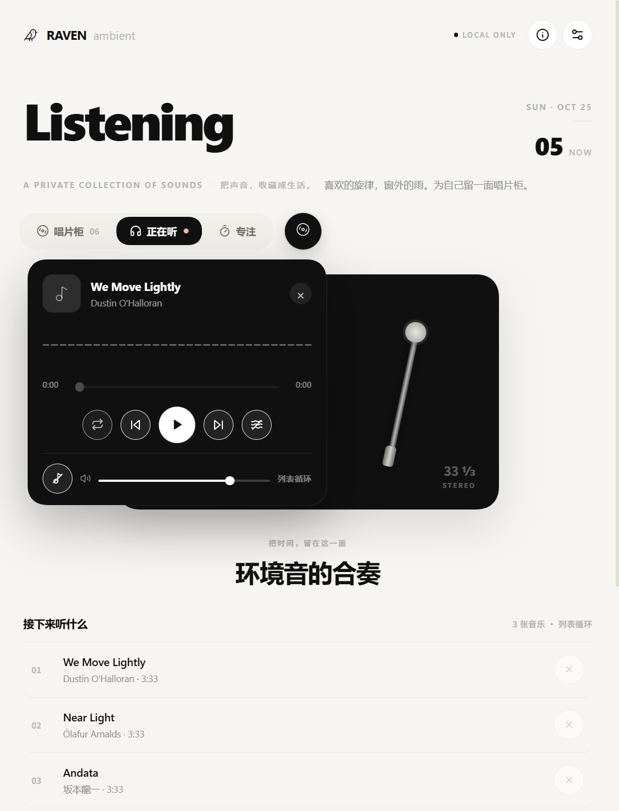

Raven Ambient 是一个本地的声音唱片柜。你把喜欢的音乐和自然声收进来， 它按你的顺序播放音乐，同时让几路环境音一起流动—— 音乐响起时环境音会自己退后一点，安静下来再慢慢回来。
全部在本机运行，不联网、不上传、不需要注册。这是提前体验版。
Raven Ambient Bold.exe
你的所有唱片。默认显示「已选择」的那些；上面三个按钮可以切到「音乐」或「环境音」看全部。 鼠标停在唱片上，封面会像唱片盒一样打开、露出里面的黑胶；点一下可以钉住，再点一下合上。 右边面板永远显示一张唱片——点过哪张显示哪张，没点过就是第一张。
每张唱片都能单独调音量，环境音还能调「左右位置」「柔和程度」和「避让幅度」。 避让幅度是 0–24 dB：设 0 就是这张不随音乐变轻。

唱盘上转的那张碟，外圈的颜色和纹理是从封面主色生成的，每张唱片都不一样， 同一次使用中固定不变，重开软件才会重新分配。
队列里长按一首约 0.35 秒可以把它拿起来，条目会上浮跟着手指走， 拖到新位置松手即完成排序。右侧的 × 把它移出队列。
环境音每一行右边有播放/暂停按钮，可以单独停掉某一路（比如今天不想听雨声）。 这个暂停只对本次运行有效，重开软件会回到全部流动。

默认 25 分钟专注 + 5 分钟小憩，每四轮一次 15 分钟长休息。 右边可以切换 25/5、45/10、15/3 三档，也能关掉完成提示音。 计时过程中可以随时暂停、跳过当前阶段或重置。
右上角那个「专注」标签固定不变，当前在哪个阶段看计时盘中央的 FOCUS / SHORT BREAK / LONG BREAK。

那颗圆碟在播放时会轻轻上下浮动，暂停时停住。点它弹出播放卡： 封面上方是实时波形，中间是进度条（可以拖），下面是顺序、上一首、播放、下一首、 环境音开关，最底下是音乐开关和总音量。
音乐响起来的时候，环境音会自动退后一点；音乐停了先保持一小段，再慢慢回来。 这不是硬切的压低，是按包络平滑过渡的，所以句子之间不会来回抽动。
每种环境音的手感不一样：森林、风、雪这类绵延的声音慢进慢出， 键盘、鸟、虫这类有明确起音的跟得紧、收得快。这些数值是按封面类型定好的，不需要你调。
不同来源的音频响度常常差十几个 dB，混在一起会一段盖住另一段。 导入时程序会测每段的实际响度并补到同一基准，最多补 15 dB、最多压 12 dB， 后面还挂了一个软限幅器兜住峰值。
所以你会看到不同唱片的音量滑杆都在差不多的位置，但它们听起来是一样响的。
导入时会读文件里内嵌的封面。环境音如果没有封面，会按文件名和曲名去匹配 17 款内置的线描封面（树、浪、火苗、雨云、雪花、鸟……）。 匹配不到也没关系，可以手动挑一张，或者上传自己的图。
没有封面的唱片，每次启动会随机配一款封套：底色取自唱片色调， 配晨光、地平线、拱门、轨道、涟漪、潮汐六种构图之一。
设置里可以选「直接切换」「交叉淡化」「淡出后淡入」三种。 默认是交叉淡化：上一首往下走的同时下一首往上走，1 秒完成。
这项只作用于你手动切歌。一首歌自然播完自动接下一首时是直接接的， 避免收尾被拖慢。
如果你不打算下载音乐文件、平时就用网易云或 Spotify 听，有个「外部音乐」模式： 音乐交给那些播放器，本程序只负责环境音和避让。
这条路需要额外装一个虚拟声卡（VB-Cable），不装也能用上面所有功能。 装它的原因是：程序没法直接读到别的播放器在放什么，只能绕一道—— 让那个播放器的声音先进入一块虚拟声卡，本程序再从那里取出来。
可选-虚拟声卡，右键 VBCABLE_Setup_x64.exe，选「以管理员身份运行」。Install Driver。安装过程中窗口可能短暂显示「未响应」，等它自己结束就好。CABLE Input。CABLE Output。声音是通的，但程序读不到歌名和封面。这是播放器自己没把信息交给系统， 不是程序的 bug。
网易云有个自己的开关（不同版本位置会变，可能叫「系统媒体控制」或「锁屏歌词」）， 默认可能是关的，版本更新或重装后会回到关闭。打开它就好。
右键音量图标 →「声音设置」→ 把「输出」改回你的音箱或耳机。 虚拟声卡留着不占资源，想彻底删掉的话在「设置 → 应用 → 已安装的应用」里卸载 VB-Cable， 然后重启。
说明系统输出还停在 CABLE Input。改回真实设备即可。
虚拟声卡的作用是把声音「截走」，所以当输出设备是它的时候，你自己是听不到的。
所有东西都存在这台电脑上，路径是：
%APPDATA%\raven-ambient-bold
导入的音频会复制一份到里面，所以原文件移动或删掉之后仍然能播。 这个文件夹可以整体备份，换电脑时拷过去就能接着用。
程序不会上传任何东西，也不联网。文件只在你选择的范围内读取， 文件夹导入是一次性扫描，不会在后台一直盯着。
| 现象 | 怎么办 |
|---|---|
| 双击后闪一下就没了 | 先看看有没有杀毒软件拦了。如果之前装过开发环境，检查环境变量里有没有 ELECTRON_RUN_AS_NODE，有的话删掉再试。 |
| 导入的文件夹是空的 | 确认里面确实有音频文件，且格式在上面列的范围里。子文件夹会一起扫描，但隐藏文件夹会跳过。 |
| 某张唱片播不出声 | 先看它的音量滑杆是不是被拉到 0，再看通道开关是不是关着（关着的时候图标上有一道斜线）。 |
| 环境音听不见 | 音乐很响的时候环境音会退让，这是设计如此。把音乐暂停，或者把那张环境音的「避让幅度」调到 0。 |
| 专注计时重置了 | 关掉软件会丢。切页面、暂停音乐都不会影响计时。 |
| 播放卡挡住了唱盘 | 点空白处或按 Escape 收起即可。 |
这是 Windows 的提前体验版，还没做安装程序和自动更新，所以是解压即用的形式。 界面是「明亮版」，另有一个奶白玻璃风格的原版在开发，功能一致。
目前的限制：
用下来有任何觉得别扭的地方，都欢迎直接说。尤其是「哪里需要点两下才顺手」「哪个动效看着卡」 这类具体的感受，比笼统的评价有用得多。